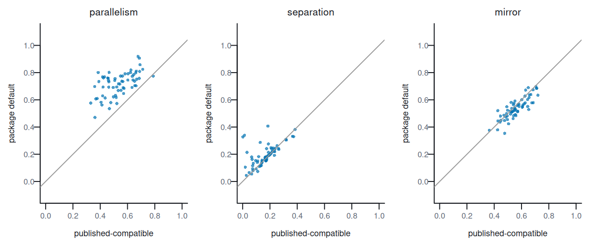
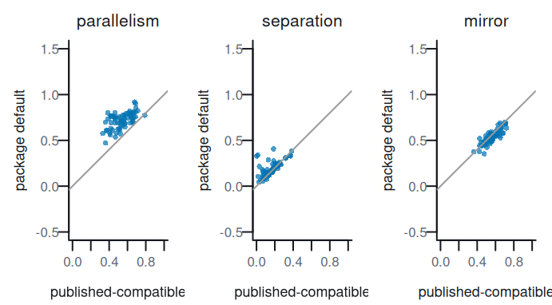

mlvtoolbox is an R port and extension of the Mid-Level
Vision (MLV) toolbox, the MATLAB code of the Bernhardt-Walther lab
described by Walther et al. (2023), qualified against outputs the lab
computed in MATLAB. For several measures the package defaults use
alternative definitions, chosen, for example, so that junctions and
branch scores do not depend on contour direction or on the start vertex
of a closed contour, and so that each curvature turn is counted once.
Some of those definitions change the numbers, which matters when you
want to compare new data with published MLV values or rerun a published
analysis. For that case the package keeps a published-compatible
mode: explicit mlv2023 options that reproduce the
MATLAB results, including the behaviours in which the defaults differ
(the two exceptions, which differ in both modes, are listed below).
This vignette gives the exact recipe for each mode, lists what each default changes and why, shows on small synthetic drawings where the two modes differ and where they agree, shows how feature specifications keep the two apart, and summarizes the qualification evidence. It ends with a short guide to choosing a mode and describing it in a methods section.
The two modes
The package defaults need no arguments. The published-compatible mode sets six options: the contour curvature estimator, the junction rule and four medial-axis settings.
# Contour curvature: also as.data.frame(), compute_contour_properties(),
# feature_table() and average_property()
contour_statistics(drawing, estimator = "mlv2023")
# Junctions
detect_junctions(drawing, rule = "mlv2023") # implies gap_metric = "chebyshev"
# Medial axis
compute_mat(drawing, aof = "mlv2023", morphology = "hmt8", branch_rule = "mlv2023",
threshold_angle = asin(0.3 * pi / 2) * 180 / pi) # 28.11°, flux threshold 0.3 (MLV-M004)analyse_mat() passes the medial-axis options through to
compute_mat(), and compute_mat_properties()
and map_mat_properties() follow the
branch_rule recorded in the mlv_mat. The
threshold angle is explained below. Contour orientation and length need
no option; they are the same in both modes. Curvature does: the default
counts each vertex turn once (estimator = "turning"), and
estimator = "mlv2023" reproduces the published values.
A feature specification declares the same choices once, so that every function that measures a drawing uses them:
angle_03 <- asin(0.3 * pi / 2) * 180 / pi # 28.11°, flux threshold 0.3
props <- c("orientation", "length", "curvature", "junction_type",
"parallelism", "separation", "mirror")
default <- feature_spec(props, bins = 4)
published <- feature_spec(props, bins = 4, estimator = "mlv2023",
junction = list(rule = "mlv2023"),
mat = list(aof = "mlv2023", morphology = "hmt8", branch_rule = "mlv2023",
threshold_angle = angle_03))
knitr::kable(data.frame(default = default$definitions,
published = published$definitions))| default | published | |
|---|---|---|
| contour | vertex-dual-1 | mlv2023-port-0.1.1 |
| branch | mlv2023-port-0.1.1 | mlv2023-port-0.1.1 |
| histogram | 1 | 1 |
| aof | centered-tie-mean-1 | mlv2023-computeAOF-lowest-index |
| morphology | hmt8-then-sequential-simple-pixel-removal-1 | sequential_hmt8_matlab_skel_order-1 |
| branch_rule | direction-symmetric-tiemax-graph-defined-3 | mlv2023-edgelink-lastwriter-1 |
| junction | exit-neighbourhood-1-euclidean | mlv2023-port-f12418a |
| tracing | pixel_graph_no_corner_cut | kovesi_edgelink_cleanedgelist |
Every specification records a versioned definition for each method. The table shows that the two modes differ in six of them (contour curvature, AOF, morphology, branch rule, junction rule and branch tracing) and share the branch-score and histogram definitions.
Why the recipe sets the threshold angle
The stored MLV datasets were computed by
computeAllMATfromVecLD.m, which calls
computeMAT.m without a threshold, so MATLAB used its
fallback flux threshold of 0.3. The package derives the threshold from
an object angle, (2/π) sin(threshold_angle), and its
default angle of 28° gives 0.298875, not 0.3 (MLV-M004). The
qualification runs that reproduced the stored values therefore passed
the angle whose threshold is exactly 0.3:
angle_03
#> [1] 28.11475
published$settings$mat$threshold_angle == angle_03
#> [1] TRUE
m <- compute_mat(mlv_drawing(list(matrix(c(5, 10, 45, 10), 1),
matrix(c(5, 22, 45, 22), 1)), 50, 32),
spec = published)
m$parameters$threshold
#> [1] 0.3With the default angle, pixels whose flux lies between the two thresholds (17.93 and 18 of a possible 60 at 60 samples) enter the skeleton although MATLAB excluded them. How often that happens on natural drawings has not been measured; use the full recipe when you need the stored values.
What each default changes
Each default below departs from a behaviour of the pinned MATLAB
source (commit f12418a), and each departure is demonstrated
by a synthetic reproducer with an independently derived answer. The
identifiers refer to the register
of differences from the reference implementations, which gives the
reproducer and the number of affected items in the stored datasets for
each.
| Stage | MLV behaviour, reproduced by mlv2023
|
Package default | ID |
|---|---|---|---|
| Contour curvature | Each segment receives the whole turn to the next segment divided by its own length; the last segment repeats the previous turn, so one vertex per contour is counted twice (on a closed contour the closing vertex is not counted), and values depend on how the curve is sampled | Each vertex turn spread once over its dual cell, from the midpoint
of the segment before it to the midpoint of the segment after it
(estimator = "turning") |
M032 |
| Junction merging and angles | Merging depends on the order of the intersections; interior arms use a different y convention from endpoint arms; intersections at negative coordinates are discarded | Transitive merging; one angle convention; any coordinates | M006–M008 |
| Junction gap | A 1 px gap allowance measured along the larger coordinate change, so up to 1.41 px on a diagonal | Euclidean gap (gap_metric = "euclidean"), the same in
every direction |
M018 |
| Junction position | Intersections within 1e-4 of a segment end snap to the endpoint | Exact intersection | M019 |
| Junction arms | Arms of interior segments measured from the merged junction centroid | Direction of the segment through which the contour leaves | M021 |
| Junction arms | A segment attaches by its start if that lies within 2 px, so reversing a contour can change the junction | Arms are the exits of each contour from the junction neighbourhood, independent of direction | M022 |
| Junction arms | Splitting one stroke into two contours with a short middle piece creates a junction | Contours ending inside the neighbourhood contribute no arm | M023 |
| Junction arms | Every segment of a contour inside the neighbourhood counts as an arm; a slight overshoot reads as X | One arm per exit | M024, M025 |
| Junction arms | Closed contours end at their first vertex | Closed contours wrap around | M026 |
| Flux | Sampling circle centred on the pixel corner, labels read from the containing cell: ridges offset by half a pixel | Circle centred on the pixel, mean over equidistant boundary pixels
(aof = "centered") |
M027 |
| Thinning | MATLAB bwmorph("skel", Inf), reproduced by
morphology = "hmt8"; can leave removable pixels and 2 x 2
blocks |
morphology = "minimal": no removable pixel remains |
design choice |
| Branch scores | Forward differences: scores depend on the direction in which a branch was traced | Mean over both directions
(branch_rule = "invariant") |
M028 |
| Mapping | Scores read from a last-writer-wins image; exact nearest-point ties resolved by enumeration order | Each branch keeps its own scores; ties take the maximum | M029 |
| Tracing | Junction points duplicated when edges are merged | No point repeated within a branch | M030 |
| Mirror score | The line fit assigns the last one or two points to the final span even when that exceeds the 1 px distance tolerance | The fit ends the span before the point that would exceed the tolerance | M016 |
| Branch scores | Undefined points (branch end points for parallelism and taper, branches of fewer than three points, mirror on three or fewer) scored 0, and that 0 averaged into neighbouring points | Undefined points NA; smoothing averages defined values only | M033 |
| Mapping | Every mapped score of exactly zero treated as missing | Valid zeros kept; missing is NA | M011 |
The thinning row records a choice of this package rather than a
difference in MLV’s behaviour: "hmt8" is the thinning that
reproduces MATLAB’s skeleton, and the default removes the pixels it
leaves that are not needed to keep the skeleton connected.
Two behaviours differ from MLV in both modes, because reproducing them would produce out-of-range or undefined values rather than different ones: separation is NA below a radius of 1 pixel instead of exceeding 1 or becoming infinite (M031), and zero-length segments are rejected or dropped instead of producing undefined angles and curvatures (M015, M020).
Where the modes agree and where they differ
The drawing below has a long bar, a stem that meets it from below and a separate short line.
seg <- function(...) matrix(c(...), nrow = 1)
drawing <- mlv_drawing(list(
seg(10, 20, 70, 20),
rbind(c(40, 44, 40, 21.5), c(40, 21.5, 40, 20)),
seg(10, 32, 30, 32)), width = 80, height = 50)Orientation and length are identical; curvature is counted once
Orientation and length do not depend on the mode:
table_default <- feature_table(analyse_mat(drawing, spec = default)$drawing)
table_published <- feature_table(analyse_mat(drawing, spec = published)$drawing)
geometry <- grep("^(orientation|length)_", names(table_default), value = TRUE)
identical(table_default[geometry], table_published[geometry])
#> [1] TRUEThe contours of this drawing are straight, so their curvature is zero in both modes. On a contour that turns, the published estimator counts the turn at the last vertex twice. An open contour that turns by 90 degrees at each of its two corners turns by 180 degrees in all:
hook <- mlv_drawing(list(rbind(c(10, 40, 30, 40), c(30, 40, 30, 20), c(30, 20, 50, 20))),
width = 60, height = 50)
integrated <- function(spec) with(as.data.frame(hook, spec = spec), sum(curvature * length))
c(default = integrated(default), published = integrated(published))
#> default published
#> 180 270Junctions
Junctions differ wherever one of MLV’s arm rules applies, for example
when a short segment at the end of a stem makes a T read as an X
(MLV-M024). vignette("junctions", package = "mlvtoolbox")
shows each case on a small drawing.
Medial-axis scores differ by design
The medial-axis defaults change values at many pixels, because they move the ridge (M027), average the two traversal directions (M028) and change how scores reach the contour (M029, M030). Per-contour means remain correlated across modes. The comparison below uses eight random synthetic drawings of eight polylines each.
set.seed(2023)
random_drawing <- function(n = 8, size = 100) {
contours <- lapply(seq_len(n), function(i) {
k <- sample(2:4, 1)
p <- matrix(runif(2 * k, 8, size - 8), ncol = 2)
cbind(p[-k, , drop = FALSE], p[-1, , drop = FALSE])
})
mlv_drawing(contours, size, size)
}
P <- c("parallelism", "separation", "mirror")
contour_means <- function(d, ...) {
x <- analyse_mat(d, properties = P, ...)$drawing
sapply(P, function(p) vapply(x$mat_properties[[p]], mean, double(1), na.rm = TRUE))
}
drawings <- replicate(8, random_drawing(), simplify = FALSE)
a <- do.call(rbind, lapply(drawings, contour_means))
b <- do.call(rbind, lapply(drawings, contour_means, aof = "mlv2023",
morphology = "hmt8", branch_rule = "mlv2023",
threshold_angle = angle_03))
ok <- stats::complete.cases(a, b)
c(contours = nrow(a), compared = sum(ok))
#> contours compared
#> 64 64
r <- sapply(P, function(p) cor(a[ok, p], b[ok, p]))
round(r, 3)
#> parallelism separation mirror
#> 0.587 0.603 0.848
op <- par(mfrow = c(1, 3), mar = c(3.2, 3.4, 2, 0.8), mgp = c(2, 0.5, 0),
las = 1, cex.axis = 0.8, cex.lab = 0.85, cex.main = 1, font.main = 1)
for (p in P) {
plot(b[ok, p], a[ok, p], xlim = c(0, 1), ylim = c(0, 1), asp = 1,
pch = 16, cex = 0.7, col = adjustcolor(okabe[["blue"]], 0.7),
xlab = "published-compatible", ylab = "package default", main = p, bty = "l")
abline(0, 1, col = "grey60")
}

Per-contour mean scores in the published-compatible mode (x) and the package defaults (y) for 64 contours of eight random synthetic drawings, with the identity line in grey. The modes are correlated (r = 0.59, 0.60 and 0.85 here) but rarely give the same value.
par(op)For these random drawings the per-contour correlations between modes are 0.59 (parallelism), 0.6 (separation) and 0.85 (mirror). Random line segments make many short, irregular branches, so these values say nothing about natural drawings; the qualification figures for natural drawings are in the evidence section below. Default parallelism lies above the published values because the published estimator scores every branch end 0 and averages that 0 into the neighbouring point (MLV-M033); short branches are mostly ends.
Valid zeros
The default mode keeps scores that are exactly zero; the published
mode, like MATpropertiesToContours.m, turns every zero into
a missing value (MLV-M011). Two lines three pixels apart have a
separation of exactly 0 along their whole length
(vignette("medial-axis", package = "mlvtoolbox") explains
why), so the same pixels are zeros in one mode and missing in the
other:
close_pair <- mlv_drawing(list(seg(10, 20, 50, 20), seg(10, 23, 50, 23)), 60, 40)
separation <- function(...) {
x <- analyse_mat(close_pair, ...)$drawing
v <- unlist(x$mat_properties$separation)
c(zero = sum(v == 0, na.rm = TRUE), missing = sum(is.na(v)))
}
rbind(default = separation(),
published = separation(aof = "mlv2023", morphology = "hmt8",
branch_rule = "mlv2023", threshold_angle = angle_03))
#> zero missing
#> default 82 0
#> published 0 82Specifications keep the modes apart
A feature specification travels with the measurements it produced. Functions that accept one check that the inputs they receive were computed under the same definitions and stop otherwise, so values from the two modes cannot be combined by accident. A medial axis computed in published mode cannot be scored under the default specification:
published_mat <- compute_mat(drawing, spec = published)
compute_mat_properties(published_mat, spec = default)
#> Error:
#> ! MAT raster specification mismatch; recompute compute_mat()Scores computed under one specification cannot be mapped under the other:
scored <- compute_mat_properties(compute_mat(drawing, spec = published), spec = published)
map_mat_properties(drawing, scored, spec = default)
#> Error:
#> ! MAT score specification mismatch; recompute compute_mat_properties()A specification is also checked against the definitions that the installed version produces for its settings. Specifications saved by mlvtoolbox 0.2.x recorded the thinning then in use, the Octave Pratt lookup tables, and had no AOF or branch-rule definitions; such a specification is rejected rather than silently reinterpreted. The example below changes one recorded definition to the 0.2.x value:
old <- default
old$definitions[["morphology"]] <- "octave_image_pratt_2.20.0"
validate_feature_spec(old)
#> Error:
#> ! noncanonical or unsupported feature specification definitionsRebuild such a specification with feature_spec() and
recompute the cached medial axes from the drawings.
Qualification evidence
The numbers in this section are results of the qualification run
recorded in docs/PARITY.md
and the reports it links. They are not recomputed here, because the
reference data are the lab’s natural drawings, which are not distributed
with the package.
The reference set holds outputs computed in MATLAB for 3,017 line drawings (IAPS, OASIS, architectural scenes, Toronto scenes and Snodgrass-Vanderwart drawings), 2,757 of them with per-pixel parallelism, separation and mirror scores, plus the complete distance map, flux and skeleton of one drawing (Forest_DBW). Rerunning the pinned MATLAB source (f12418a) under GNU Octave reproduced every stored geometry value and all junctions checked, so the stored outputs correspond to that source revision.
| Stage | Published-compatible mode vs stored MATLAB | Package defaults vs stored MATLAB |
|---|---|---|
| Segment orientation, length, curvature | All 2,284,239 segments within 1e-9 | Orientation and length the same; curvature differs by design (each turn counted once, M032) |
| Junctions | 395,125 of 395,134 identical in position, type, members and angles; the other 9 depend on zero-length segments | 356,113 (90.1%) identical; every difference attributed to a recorded MLV difference or a package definition |
| Distance map, flux, skeleton (Forest_DBW) | Distances identical, flux within 2.1e-14, skeleton identical (24,904 px) | Different by design (M027, thinning) |
| Per-pixel scores (2,757 drawings) | 99.1%, 99.4% and 99.3% of pixels within 1e-4 (parallelism, separation, mirror); per-contour r = 0.9993, 0.9999, 0.9986 | Per-contour r = 0.811, 0.982, 0.864 |
The remaining per-pixel differences in published mode come from MLV’s single-precision arithmetic, which occasionally flips an exact tie between nearest tangent points. The qualification has stated limits: MATLAB itself was not run, so the stored outputs serve as the reference; MATLAB’s undocumented skeletonization was identified empirically and matched exactly on the Forest_DBW drawing; rasterization tie rules were observed only for integer endpoints; and extracting drawings from photographs is not qualified.
Choosing a mode
Use the package defaults for new studies. Their
junctions and medial-axis scores do not depend on contour direction,
contour numbering, the start vertex of a closed contour or the direction
in which a branch was traced, and rotating or reflecting the ink raster
by a multiple of 90° rotates or reflects the flux field in the same way.
Their curvature counts every vertex turn once and does not change when a
curve is resampled; when curvature should be stated at a physical scale,
use
feature_spec(estimator = "arclength", curvature_scale = ...)
(see
vignette("getting-started", package = "mlvtoolbox")).
Use the published-compatible mode when values must be comparable with numbers computed by the MATLAB toolbox: extending or replicating a published dataset, comparing against published norms, or rerunning an analysis whose features were computed in MATLAB. Do not mix modes within one analysis; save the feature specification with the data, and the checks above enforce this.
If a result depends on the mode, report both. Contour orientation and length are identical in the two modes, curvature differs wherever a contour turns, most junctions are identical, and per-contour medial-axis means are highly correlated but not equal, so an effect that appears in only one mode deserves a closer look at the drawings that drive it.
Describing the mode in a methods section
Report the package version, the mode and the settings that differ
from the defaults, and cite both the package and the original methods.
citation() gives the references:
print(citation("mlvtoolbox"), style = "text")
Buchsbaum B (2026). _mlvtoolbox: R Implementation and Extensions of the
Mid-Level Vision Toolbox_. R package version 0.3.0 (independent R port;
original methods credited separately).
Walther D, Farzanfar D, Han S, Rezanejad M (2023). "The mid-level
vision toolbox for computing structural properties of real-world
images." _Frontiers in Computer Science_, *5*, 1140723.
doi:10.3389/fcomp.2023.1140723
<https://doi.org/10.3389/fcomp.2023.1140723>.
Rezanejad M, Downs G, Wilder J, Walther D, Jepson A, Dickinson S,
Siddiqi K (2019). "Scene Categorization from Contours: Medial Axis
Based Salience Measures." In _Proceedings of the IEEE/CVF Conference on
Computer Vision and Pattern Recognition_.
<https://openaccess.thecvf.com/content_CVPR_2019/papers/Rezanejad_Scene_Categorization_From_Contours_Medial_Axis_Based_Salience_Measures_CVPR_2019_paper.pdf>.Example sentence for the package defaults:
Contour orientation, length, curvature, junctions and medial-axis parallelism, separation and mirror symmetry were computed with mlvtoolbox 0.3.0 (Buchsbaum, 2026), an R implementation of the Mid-Level Vision Toolbox (Walther et al., 2023), using its default definitions, which differ from the MATLAB implementation in documented ways so that junctions and medial-axis scores do not depend on contour direction or numbering and each vertex turn is counted once in curvature; medial-axis scores follow Rezanejad et al. (2019).
Example sentence for the published-compatible mode:
Features were computed with mlvtoolbox 0.3.0 (Buchsbaum, 2026) in its published-compatible mode (curvature estimator
mlv2023; junction rulemlv2023; medial axis withaof = "mlv2023",morphology = "hmt8",branch_rule = "mlv2023"and an object-angle threshold of 28.11°, that is, a flux threshold of 0.3), which reproduces the values of the MATLAB Mid-Level Vision Toolbox (Walther et al., 2023; source revision f12418a).
If you used a nondefault threshold, window or mapping radius, state
it, and deposit the feature specification (for example as the sidecar
written by write_feature_csv()) with the data.
Where to go next
-
vignette("medial-axis", package = "mlvtoolbox"): what each medial-axis stage and score measures, on small drawings. -
vignette("junctions", package = "mlvtoolbox"): the junction rules of both modes, case by case. -
docs/PARITY.mdand the differences register: the qualification evidence and every recorded difference.
References
Rezanejad, M., Downs, G., Wilder, J., Walther, D. B., Jepson, A., Dickinson, S., & Siddiqi, K. (2019). Scene categorization from contours: Medial axis based salience measures. Proceedings of the IEEE/CVF Conference on Computer Vision and Pattern Recognition.
Walther, D. B., Farzanfar, D., Han, S., & Rezanejad, M. (2023). The mid-level vision toolbox for computing structural properties of real-world images. Frontiers in Computer Science, 5, 1140723. https://doi.org/10.3389/fcomp.2023.1140723